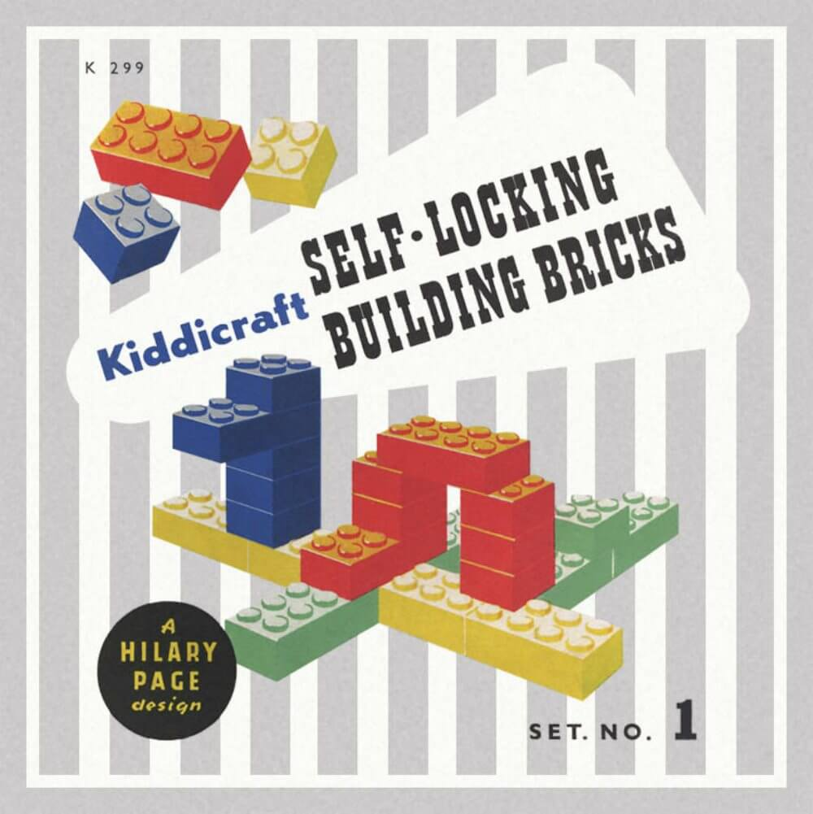
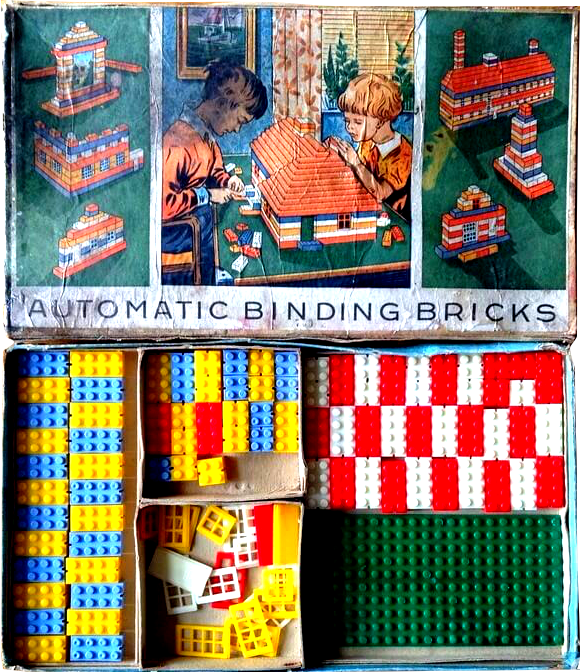
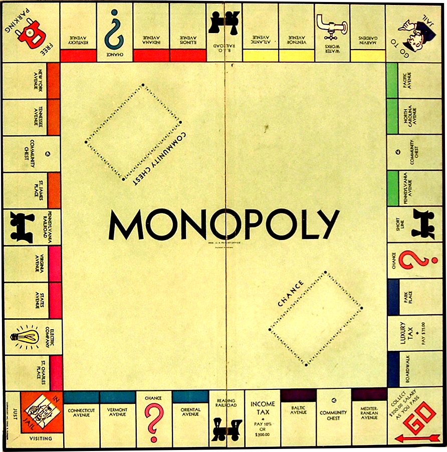
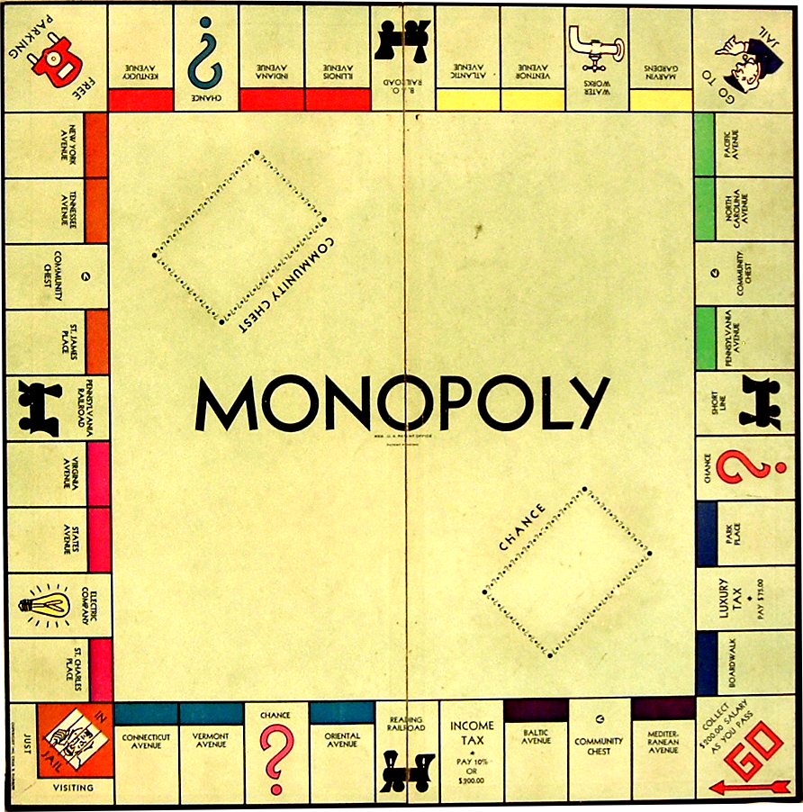

Did you know that some of our favorite childhood games are actually knock-offs of decades-old designs? In honor of Game Day, here are some the original versions of 3 popular games. What do you thing? Are the remakes as good as the originals?
1. The Game of Life (1860/1960)
The Checkered Game of Life in 1866 (left) was meant to teach morals about living. The game was played with a spinner, much like a top. Milton reimagined it in 1960 (right) and keeps making it today. The concept is still the same: to navigate through life. They kept the idea of a spinner by building one into the board. They wisely took out the suicide square. Photo courtesy of The Strong.
2. LEGOs (1939/1949)
Kiddicraft Self-Locking Blocks (1939, left) were the first plastic building blocks on the market. LEGO, up until then a wooden toy company, got their hands on a set and after better plastic molds came out in 1949, released Automatic Binding Bricks (right), now simply known as LEGOs. Photo courtesy of CataWiki.

 

{kind=link}
{kind=link}
{kind=link}
{kind=link}
{kind=link}